External
Resources
Code -------> GitHubGitHGt
Img / Vid --> YoutubeYotYt
Img / Vid --> InstagramInt
Purchase ---> EtsyEtEyEtst
About
Contributed
EXT
RNL
External Resources:
Code -------> GitHubGitHGt
Img / Vid --> YoutubeYotYt
Img / Vid --> InstagramInt
Purchase ---> EtsyEtEyEtst
About
Contributed
☀
Variable Oscillations
Auxiliary Research Station
Variable
Oscillations
SNID
SNIDxs
SNIDv1
BWOP
Glitch
EVE
